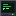

Mods & Packs
Everything here is free. Pick one and jump in.

How to install
Works the same for every mod here.
Get a launcher
Use a launcher like Prism Launcher and make a Fabric instance for the right Minecraft version.
Add Fabric API
Download Fabric API and drop it into the instance's mods folder.
Drop in the mod
Download the mod's .jar from here and put it in the mods folder too. Shader packs go in shaderpacks.
Play!
Launch the game. New items show up in the creative menu right away.